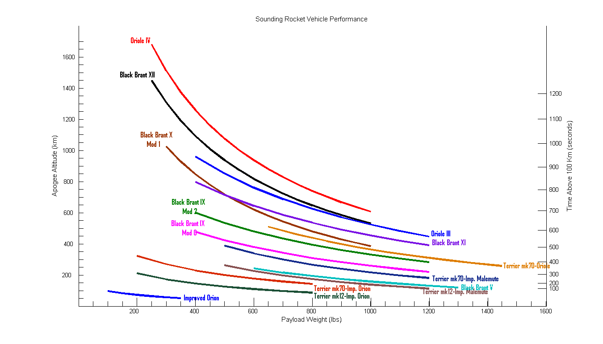

The NASA sounding rockets program has launch sites worldwide that span a range of latitudes for access to a variety of geophysical conditions or astronomical objects.
This site is designed to be a place where the community can contribute to the content and design of the site to best suite community needs. Please see the README.md file for how to modify or add content to this site.
Sounding rockets carry scientific instruments into space along parabolic trajectories, providing nearly vertical traversals along their upleg and downleg, while appearing to "hover" near their apogee location. Whereas the overall time in space is brief (typically 5-20 minutes), for a well-placed scientific experiment happily launched into a geophysical phenomena of interest, the short time and low vehicle speeds are more than adequate (in some cases they are ideal) to carry out a successful scientific experiment. Furthermore, there are some important regions of space that are too low to be sampled by satellites (i.e., the lower ionosphere/thermosphere and mesosphere below 120 km altitude) and thus sounding rockets provide the only platforms that can carry out direct in-situ measurements in these regions. Astronomy, solar, and planetary science missions include sophisticated telescopes with optional joy-stick operated, sub-arc-second pointing for >5 minute continuous observations of astronomical objects, including those too close to the sun for Hubble. Microgravity missions are carried out on high altitude, free-fall parabolic trajectories which provide ideal microgravity environments without the vibrations frequently encountered on human-tendered platforms.
Because the science payload does not go into orbit, sounding rocket missions do not need expensive boosters or extended telemetry and tracking coverage. As a result, mission costs are substantially less than those required for orbiter missions. Furthermore, because the program is managed and the payloads are built in one central location (e.g., the NASA/Wallops Flight Facility), significant savings are realized through efficient, cost-savings operations that procures parts and rocket motors in large quantities and utilizes past designs of sub-systems for follow-on missions. In other words, the sounding rocket program takes advantage of a high degree of commonality and heritage of rockets, payloads, and sub-systems flown repeatedly. In many cases, only the experiment -- provided by the scientist -- is changed. Costs are also very low because of the acceptance of a higher degree of risk in the mission (compared to orbital missions), although safety is never compromised. In some cases (such as almost all astronomy, planetary, solar, and microgravity missions), the payloads are recovered which means the costs of the experiment and sub-systems are spread out over many missions.
Not only are sounding rocket missions carried out at very low cost, but also the payload can be developed in a very short time frame -- sometimes as quickly as 3 months! This rapid response enables scientists to react quickly to new phenomena (such as observing the Shoemaker-Levy comet impact to Jupiter in 1994) and to incorporate the latest, most up-to-date technology in their experiments.
The sounding rocket program continues to serve as a low-cost testbed for new scientific techniques, scientific instrumentation, and spacecraft technology, eventually flown on numerous satellite missions. For example, COBE, CGRO, EVUE, FAST, ASTRO-2, UARS, SOHO, TRACE, and numerous other recent NASA Satellite missions have been enabled by technology and techniques developed in the suborbital program. Furthermore, the low cost of sounding rocket access to space fosters innovation: instruments and/or technologies which are not sufficiently developed to warrant the investment of satellite-program scale funding are often "proto-typed" with initial space testing on sounding rockets.
In addition to science and technology, sounding rockets also provide invaluable tools for education and training. For example, a three-year sounding rocket mission at a university provides an excellent research opportunity for a Ph.D. dissertation, in which the student carries the project through all of its stages from conception, to hardware design, to flight, to data analysis and, finally, to the publication of the results. This "hands on" approach provides the student with invaluable experience of understanding the space flight mission as a whole. Indeed, over 400 Ph.D.'s have been awarded as part of NASA's sounding rocket program.
One of the most robust, versatile, and cost-effective flight programs at NASA, for over 60 years the Sounding Rocket Program has provided critical scientific, technical, and educational contributions to the nation's space program.
The NASA sounding rockets program has launch sites worldwide that span a range of latitudes for access to a variety of geophysical conditions or astronomical objects.

NASA launch vehicles are assigned numbers based on the vehicle number and mission number. For example, the 120th mission on a Black Brant IX would have the mission designation 36.120.
The apogee of NASA launch vehicles is a function of the payload weight. The currently available launch vehicles can yield apogees from 100 to just over 1,600 km with a corresponding payload weight range from about 90 kg (200 lbs) to about 630 kg (1400 lbs).
NASA sounding rocket mission page
NASA Wallops Flight Facility sounding rockets program office
Poker Flat Research Range
Space Center located in Norway that supports rocket and balloon launches
White Sands Missile Range in New Mexico
Laboratory for Atmospheric and Space Physics, Boulder, Colorado
Wikipedia page on sounding rockets
A NASA publication
An ESA publication